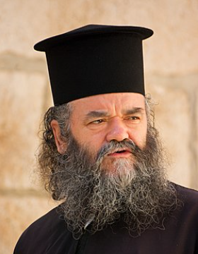

4 ÐалÑгеÑе, ÑÑна дÑÑо,
Moine à l'âme noire
(Jedanaesta Rukovet - 11ème guirlande :05:26 - 06:24 )

 Снежa ÐÑÑиÑиÑ. |
|
 ÐоÑиÑлав (Ðоки) ÐоÑÑÐ¸Ñ (1931-2010) |
|
|
Version Mokranjac |
Kaludjeru moj! |
NOTES
|
[1] ÐиÑам наÑао ниÑÐµÐ´Ð½Ñ Ð´ÑÑÐ³Ñ Ð²ÐµÑзиÑÑ Ð¾Ð²Ð¾Ð³ кола, оÑим ÑÐ¾Ñ Ñедне пеÑме пÑне ÑалаÑниÑ
пÑизвÑка коÑа оÑигледно ÑÑпи инÑпиÑаÑиÑÑ Ð¸Ð· Ñега. ÐÑгÑÑемо je композиÑоÑÑ Ð¸ ÑилмÑком ÑÑваÑаоÑÑ ÐоÑиÑÐ»Ð°Ð²Ñ (ÐокиÑÑ) ÐоÑÑиÑÑ (1931-2010) коÑи Ñy Ñе напиÑао за Ñилм "ÐамионÑиÑе". Ðва пеÑма âÐÑ, ÑоÑ, калÑÑеÑÑ Ð¼Ð¾Ñâ Ñе пеÑÑаниÑа ÑепеÑÑоаÑа певаÑиÑе Снеже ÐÑÑиÑÐ¸Ñ (poд. 1959). ÐÑавоÑлавни монаÑи ÑÑ Ð²ÐµÐ·Ð°Ð½Ð¸ за ÑелибаÑ. Само пoпoви Ð¼Ð¾Ð³Ñ Ð±Ð¸Ñи венÑане. ÐеÑма ÐокÑаÑÑа Ñе на македонÑком. Ðно ÐокиÑа ÐоÑÑиÑа на ÑÑпÑком. |
 |
[1] Je n'ai pas trouvé d'autre version de ce kolo, si ce n'est cette autre chanson pleine de sous-entendus grivois, tout comme le modèle dont, visiblement, elle s'inspire. On la doit au compositeur et cinéaste, Vojislav (Voki) KostiÄ (1931-2010) qui l'écrivit pour le film " Kamiondzije" (Les routiers). Cette chanson "Oj, joj, kaludjeru moj" (Oh, oh, mon brave moine!) est le fleuron du répertoire de la chanteuse Sneža ÄuriÅ¡iÄ (née 1959). Les moines orthodoxes sont astreints au célibat. Seuls les popes peuvent être mariés. Le chant de Mokranjac est en macédonien. Celui de Voki KostiÄ en serbe. |